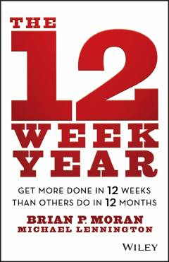

T112 haftada bir yillik natijalarga erishish uchun amaliy qo'llanma.
Ushbu kitob an'anaviy yillik rejalashtirish tizimini rad etib, maqsadlarga erishish uchun 12 haftalik qisqa muddatli strategiyani taklif qiladi. Mualliflar Brian Moran va Michael Lennington ijro intizomi, javobgarlik va yuqori natijalarga erishish bo'yicha amaliy usullarni tushuntirib berishadi.